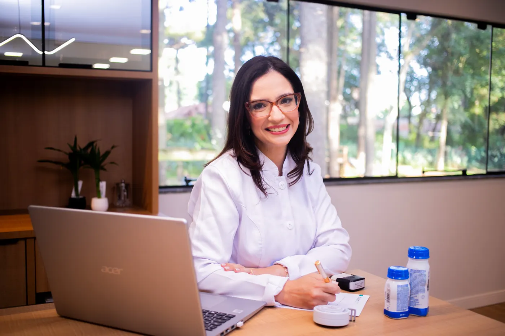
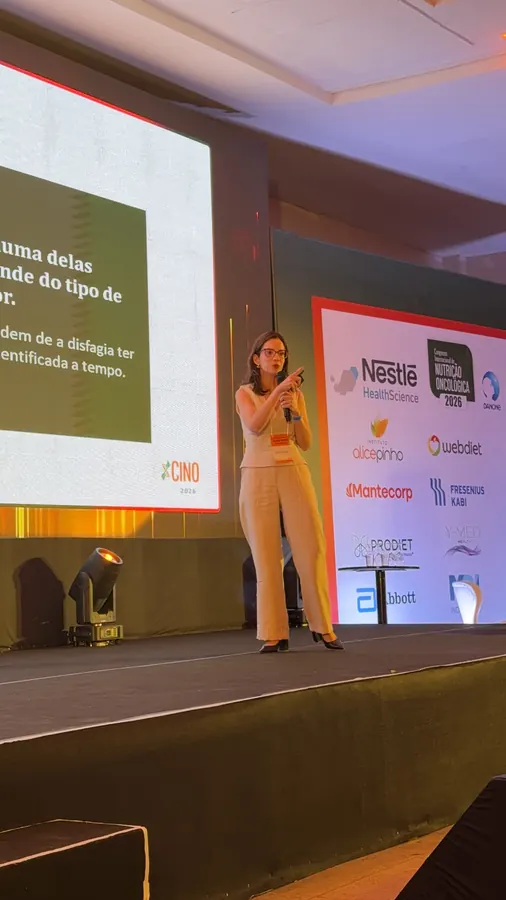
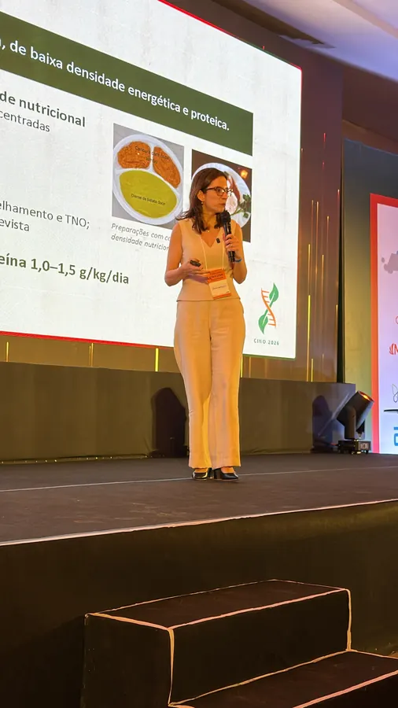
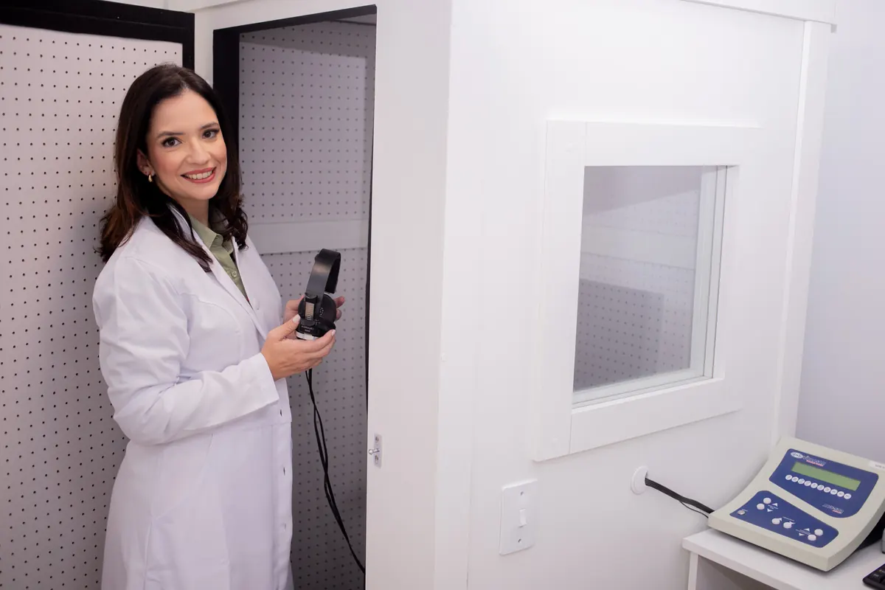

“A Karen foi uma pessoa essencial na minha caminhada durante a quimioterapia e no pré e pós-operatório do câncer de mama. Minha recuperação foi muito melhor do que eu imaginava, consegui manter minha energia, disposição, imunidade e exames ótimos durante toda a quimioterapia.”
Vou te ajudar a se alimentar melhor e a preservar sua força durante o tratamento do câncer.
Sou a Karen Inamassu, nutricionista oncológica há mais de 16 anos. Acompanho pacientes de todo o Brasil com estratégias alimentares adaptadas aos sintomas, ao apetite e a cada fase do tratamento, sempre com base nos protocolos mais atualizados.
Quero agendar minha consulta
Atendimento presencial em Curitiba ou 100% online, no conforto da sua casa.
Nota 5,0 no Google, com avaliações de pacientes e familiares
Descubra como é possível voltar a comer melhor e manter a sua força mesmo durante o tratamento
Em poucos minutos eu te mostro como funcionam as estratégias alimentares que uso com os meus pacientes.
 Assistir ao vídeo
Assistir ao vídeo
Eu sei que o tratamento mexe com o corpo, com a rotina e até com a vontade de sentar à mesa
Para cada sintoma existe uma estratégia alimentar. Escolha abaixo o que você tem sentido e veja como eu posso te ajudar.
Toque no que você tem sentido
Você tem passado por isso?
O enjoo começa antes mesmo da refeição
O cheiro da comida incomoda, a fome desaparece e você passa o dia beliscando apenas o que consegue tolerar.
Estratégias alimentares que podem te ajudar
- Refeições menores e mais frequentes, em horários planejados
- Preparações frias ou em temperatura ambiente, com menos cheiro
- Escolhas que garantem proteína mesmo nos dias de enjoo
Você tem passado por isso?
Você sabe que precisa comer, mas a vontade não vem
As porções diminuem a cada semana e, junto com elas, o peso, a energia e a força para seguir o tratamento.
Estratégias alimentares que podem te ajudar
- Volumes menores, com mais nutrientes em cada garfada
- Preparações enriquecidas para não perder proteína nem energia
- Aproveitar os momentos do dia em que a fome aparece
Você tem passado por isso?
Até a água e a comida têm gosto estranho
Aparece o gosto metálico e aquilo que você gostava deixa de ser agradável de uma hora para outra.
Estratégias alimentares que podem te ajudar
- Ajuste de temperos, ervas e acidez para disfarçar o gosto metálico
- Troca de texturas e temperaturas das preparações
- Alternativas para os alimentos que deixaram de agradar
Você tem passado por isso?
Mastigar ou engolir virou um esforço
Feridas, sensibilidade, boca seca e dor ao engolir reduzem suas opções justamente quando você mais precisa se alimentar.
Estratégias alimentares que podem te ajudar
- Consistência dos alimentos adaptada para engolir com mais segurança
- Preparações macias e úmidas, que não machucam a boca
- Atenção aos sinais de engasgo e de dificuldade para engolir
Você tem passado por isso?
Seu intestino muda de um ciclo para outro
Prisão de ventre, diarreia ou desconforto abdominal deixam você inseguro até para repetir o que comeu no dia anterior.
Estratégias alimentares que podem te ajudar
- Ajuste de fibras e líquidos conforme o momento do intestino
- Reconhecer o padrão de cada ciclo do tratamento
- Orientações práticas para os dias de prisão de ventre ou diarreia
Você tem passado por isso?
Cada pessoa diz que você deve cortar algo
Açúcar, carne, leite, frutas. Tantas opiniões aumentam o medo e fazem você retirar alimentos sem saber se isso realmente ajuda.
Estratégias alimentares que podem te ajudar
- Respostas baseadas em evidência científica para as suas dúvidas
- Nada de cortar alimentos sem necessidade ou por terrorismo alimentar
- Orientações sempre alinhadas com a sua equipe médica
Você tem passado por isso?
Sua família quer ajudar, mas não sabe como
Falta energia para escolher e preparar as refeições, enquanto quem cuida de você tenta oferecer algo sem saber o que será aceito.
Estratégias alimentares que podem te ajudar
- Orientações claras para quem prepara as suas refeições
- Ideias práticas de preparações para os dias mais difíceis
- Um jeito de ajudar sem pressionar na hora de comer
Você não precisa esperar o próximo ciclo para descobrir se vai conseguir comer. Cada ciclo deixa pistas, e com orientação elas viram uma estratégia.
Em vez de um cardápio pronto, estratégias alimentares que acompanham você
Seu oncologista conduz o tratamento oncológico. Eu cuido do que acontece entre uma sessão e outra: o que você consegue comer, como adaptar as refeições e o que fazer quando os sintomas mudam.
Sem acompanhamento
Com acompanhamento
Você espera o sintoma aparecer para reagir
Você reconhece o padrão dos ciclos e já tem estratégias planejadas
Tenta seguir um cardápio rígido que não respeita os dias ruins
A estratégia se adapta ao que seu corpo consegue aceitar naquele momento
Corta alimentos por medo e informação desencontrada
Decisões baseadas em evidência, na sua fase e na orientação médica
Perde peso e força sem perceber a tempo
Acompanhamento próximo para cuidar do peso e da força ao longo do tratamento

Online ou presencialO mesmo cuidado, onde quer que você esteja no Brasil
É assim que funciona o acompanhamento comigo
- 01
Primeiro, eu quero entender a sua história
Na primeira consulta conversamos sobre o tratamento que você está fazendo, seus sintomas, seus exames, sua rotina e o que você realmente está conseguindo comer.
- 02
Depois, montamos as suas estratégias alimentares
Organizo refeições, volumes, preparações e alternativas para os dias de náusea, pouco apetite ou paladar alterado e, quando faz sentido, um plano alimentar para o seu dia a dia.
- 03
Se o sintoma muda, a estratégia muda junto
Eu acompanho a sua evolução de perto e ajusto as estratégias sempre que o apetite, os sintomas ou a tolerância aos alimentos mudarem.
Estudar sempre faz parte do cuidado que eu tenho com você
A nutrição oncológica muda com frequência, e eu procuro acompanhar essas mudanças de perto. Participo de congressos e eventos da área ao longo do ano e, em 2026, tive a alegria de ser uma das palestrantes do CINO, o Congresso Internacional de Nutrição Oncológica.
Essa troca com outros profissionais me mantém atualizada, e é esse conhecimento que eu levo para cada paciente que acompanho.


CINO 2026 · Congresso Internacional de Nutrição Oncológica · Salvador (BA)
Participo de congressos e eventos científicos
Para acompanhar de perto as novas pesquisas e o que muda na prática da nutrição oncológica.
Sigo os protocolos mais recentes
Minhas estratégias se baseiam nas diretrizes nacionais e internacionais mais atuais, sempre adaptadas à sua realidade.
Troco experiências com outros profissionais
Nos eventos, compartilho e aprendo com nutricionistas e outros profissionais que também cuidam de pacientes oncológicos.

Hoje também estou me aprofundando no câncer de cabeça e pescoço
Estou me especializando no cuidado de pacientes com câncer de cabeça e pescoço e finalizando a graduação em Fonoaudiologia, para cuidar com ainda mais precisão de quem enfrenta disfagia, engasgos e dificuldade para engolir durante o tratamento.
O acompanhamento continua aberto a pacientes com todos os tipos de câncer.
Prazer, eu sou a Karen Inamassu
Sou nutricionista clínica oncológica e, há mais de 16 anos, acompanho pacientes durante o tratamento contra o câncer. Ao longo desse tempo ficou claro para mim que o paciente não precisa apenas de uma dieta: precisa de orientação, estratégia, adaptação e acolhimento diante dos desafios reais do tratamento.
Meu trabalho une ciência, prática clínica e individualização, sempre com uma alimentação possível na vida real e sem terrorismo alimentar. Quero que você atravesse esse processo com mais força, segurança e qualidade de vida.
- Nutricionista Clínica OncológicaCRN8 6238
- Mais de 16 anos em oncologiaantes, durante e depois do tratamento
- Palestranteem eventos de nutrição oncológica
- Atendimento onlineou presencial em Curitiba
Veja o que meus pacientes e seus familiares contam sobre o acompanhamento
5,0
Avaliações reais no Google
Algumas dúvidas que eu sempre recebo
Se a sua dúvida não estiver aqui, me chama no WhatsApp e me conta o seu momento.
Tirar uma dúvidaComo funciona o atendimento online?
Hoje a maior parte dos meus atendimentos é online. As consultas acontecem por videochamada, você não precisa sair de casa e recebe o mesmo cuidado de uma consulta presencial. Para quem está em Curitiba, também atendo no consultório, no Centro da cidade.
Vou receber um plano alimentar?
Quando faz sentido, sim. Mas o centro do acompanhamento são as estratégias alimentares: alternativas práticas para cada sintoma e cada fase, que mudam conforme o seu corpo responde ao tratamento. Assim você não fica preso a um cardápio que não funciona nos dias difíceis.
É apenas uma consulta?
Não. A proposta é acompanhar as mudanças da alimentação e ajustar as estratégias ao longo do tratamento, conforme os sintomas, a aceitação e a fase mudam.
Em que fase do tratamento posso começar?
Em qualquer uma: antes de uma cirurgia, durante a quimioterapia ou a radioterapia, e também depois do tratamento. Quanto antes as dificuldades forem avaliadas, mais cedo as refeições podem ser adaptadas.
Você atende pacientes com câncer de cabeça e pescoço ou dificuldade para engolir?
Sim. É um dos temas em que venho me aprofundando, e as consistências, texturas e preparações são ajustadas para tornar a alimentação mais segura e confortável. Atendo também pacientes com todos os outros tipos de câncer.
Familiares podem participar?
Sim, e é muito bem-vindo. As orientações ajudam quem participa das compras, do preparo das refeições e dos cuidados da rotina.
Como funciona o primeiro contato?
Pelo WhatsApp você me conta em que fase do tratamento está e recebe as informações sobre formato, disponibilidade e atendimento particular.
Não espere chegar ao ponto de quase não conseguir comer.
Quando os sintomas se repetem a cada ciclo, a alimentação diminui aos poucos e o corpo sente cada vez mais. Me conta em que fase você está, e eu te explico como as estratégias alimentares podem ser adaptadas ao seu momento.
Quero agendar minha consulta Presencial em Curitiba ou 100% online, no conforto da sua casa.